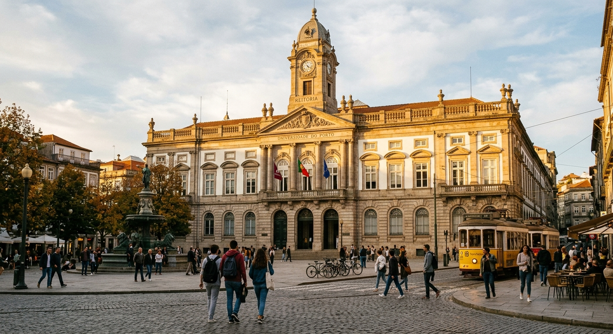
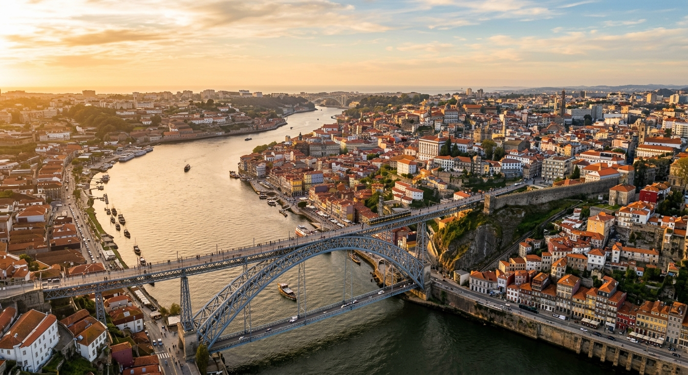
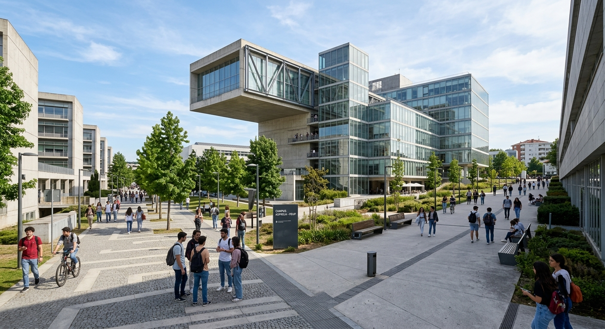
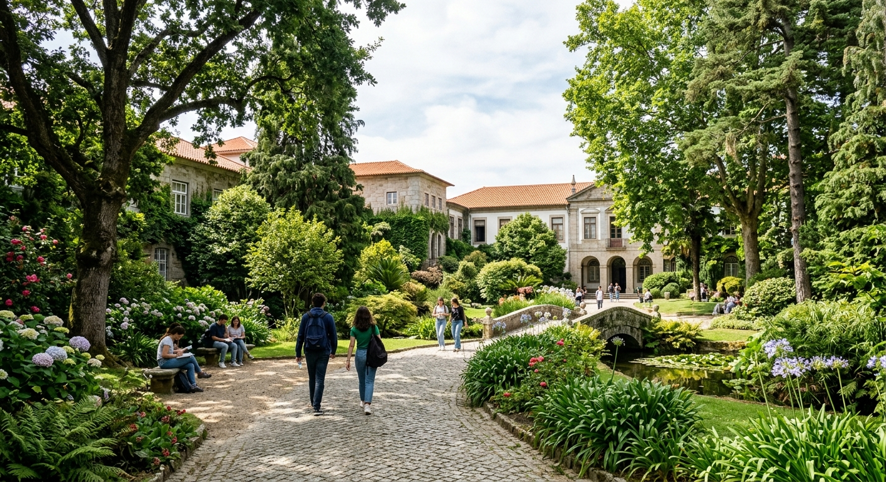
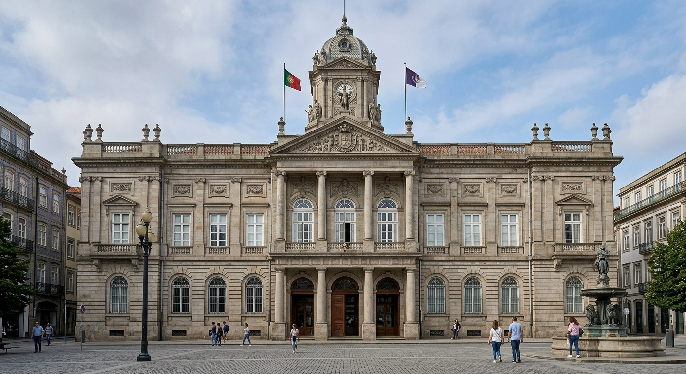
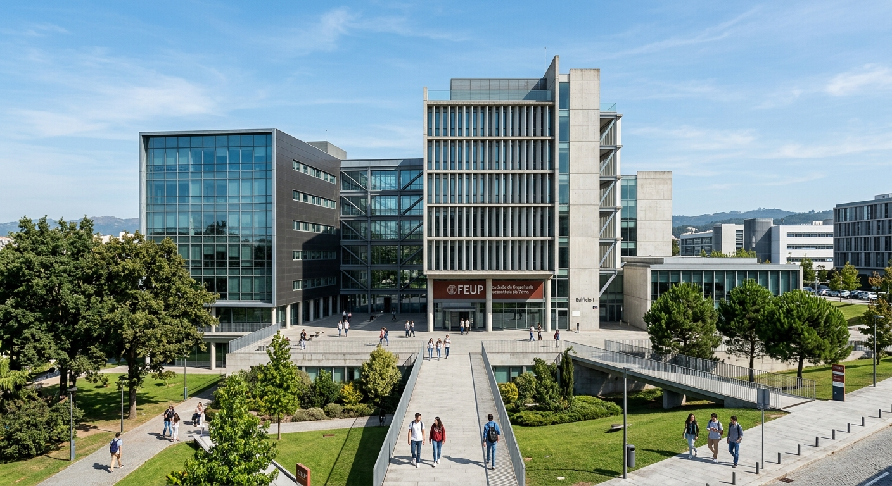
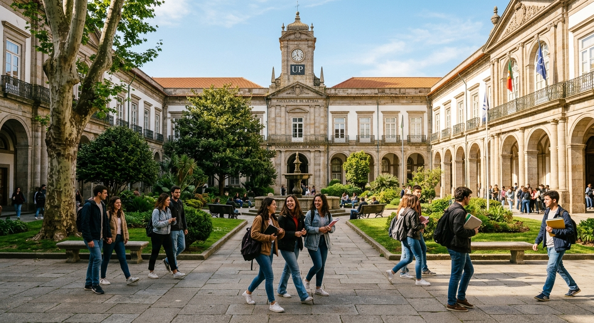
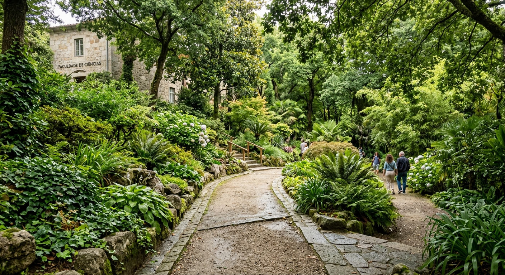
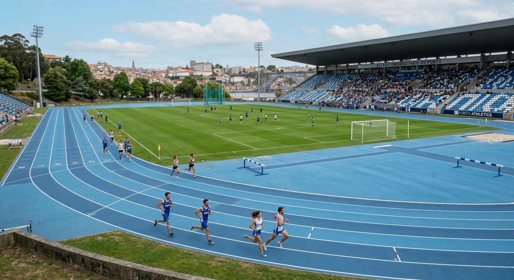

Polo I
Centro Histórico
Reitoria · FLUP · FDUP · FMUP

Três polos, diversas faculdades, locais da comunidade
Três campus, uma universidade

Reitoria · FLUP · FDUP · FMUP

FEUP · FCUP · FEP · FADEUP · ICBAS

FCNAUP · FBAUP · Ciências




As faculdades que acolhem atividades
Lista em atualização.
Parceiros e instituições fora do campus
Diversas IPSS e entidades parceiras na área metropolitana do Porto acolhem atividades ao longo da semana.
Informação em atualização.

O Estádio Universitário será o ponto de chegada da caminhada solidária e palco das atividades de encerramento, no dia 26 de setembro.
Ver LocalizaçãoMorada e acessos em atualização.
Transportes e acessos
Informação em atualização.